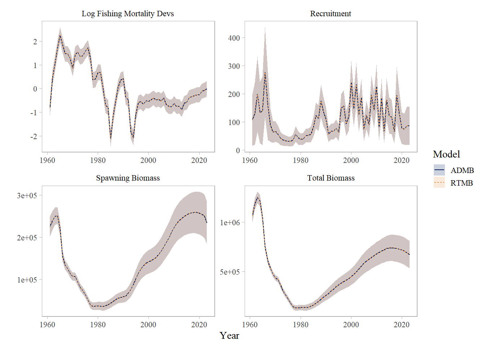
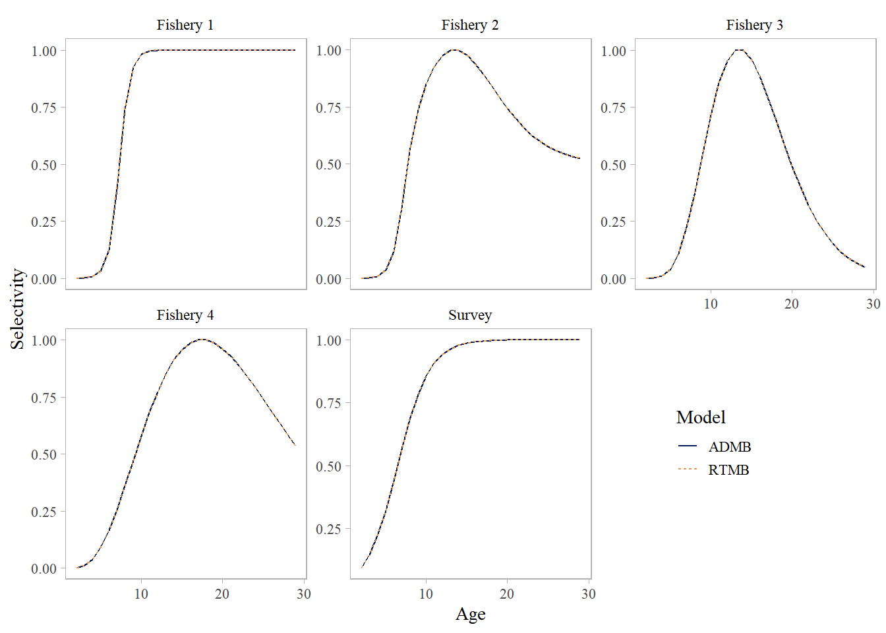

files = "~/assessments/goa_pop/"
library(RTMButils)
library(afscassess)
library(afscdata)
library(patchwork)
library(tidyverse)
theme_set(afscassess::theme_report())
source(paste0(files, "2025/r/models.R"))
# globals ----
ages = 2:25
years = 1961:2023
length_bins = 16:45Model Bridging
ADMB to RTMB
The Gulf of Alaska Pacific Ocean Perch stock assessment is currently in a bespoke ADMB model framework. The ADMB program is in the process of an ‘orderly shutdown of development’ (see: ADMB) and Template Model Builder (TMB) is a viable alternative for fishery stock assessment development. TMB is widely seen as the successor to ADMB, though there are some noted differences (e.g., TMB has no native phasing, so all parameters are estimated simultaneously). RTMB allows for accessing most of the utility found in TMB but the models can be written entirely in R rather than C++ (RTMB 2024).
The RTMB assessment model and the associated comparison code are available on GitHub.
A key difference between the ADMB and RTMB models is that parameters for the logistic function describing maturity-at-age are estimated conditionally in the ADMB model. These parameter values are identical to estimating maturity-at-age independently via GLM. Estimating maturity-at-age parameters conditionally influences the model only through the evaluation of uncertainty, as the MCMC procedure includes variability in the maturity parameters in conjunction with variability in all other parameters, rather than assuming the maturity parameters are fixed. Thus, estimation of maturity-at-age within the ADMB assessment model allows for uncertainty in maturation to be incorporated into uncertainty for key model results (e.g., SSB), though estimates of other parameters are not effected. Moving maturity estimation outside of the model permits easier implementation of alternative functional forms and does not impact estimation of other model parameters.
Using ADMB Model 2020.1 MLE estimates as input values in Model 25.0 produces the same model predictions (?@tbl-par), and when optimized from there the same standard errors (uncertainties) for parameters and derived quantities. Negative log-likelihood values are nearly identical, differing by a few decimal points (Table 1). Comparison shows that the RTMB model results are consistent with the ADMB version (Figure 1, ?@fig-slx), with negligible differences that arise from numerical precision.
Get ADMB model outputs from 2023 run.
# bridge data and results from 2023 ADMB model
REP = readLines("~/assessments/goa_pop/2025/base/model_20_1.rep")
PAR = readLines("~/assessments/goa_pop/2025/base/model_20_1.par")
STD = read_table("~/assessments/goa_pop/2025/base/model_20_1.std")
DAT = readLines("~/assessments/goa_pop/2025/base/goa_pop_2023.dat")
CTL = readLines("~/assessments/goa_pop/2025/base/goa_pop_2023.ctl")
a50_vals = c(as.numeric(PAR[grep('\\ba502:', PAR)+1]), exp(as.numeric(PAR[grep('\\ba50:', PAR)+1])), exp(as.numeric(PAR[grep('\\ba503:', PAR)+1])))
delta_vals = c(as.numeric(PAR[grep('\\bdelta2:', PAR)+1]), as.numeric(PAR[grep('\\bdelta:', PAR)+1]),as.numeric(PAR[grep('\\bdelta3:', PAR)+1]))Run RTMB model
# 2023 data & pars from ADMB model
data0 = readRDS(paste0(files, "2025/rtmb_bridge/data.rds"))
pars0 = readRDS(paste0(files, "2025/rtmb_bridge/pars.rds"))
# original ADMB starting pars
pars1 = list(log_M = log(0.0614),
log_a50C = log(c(6, 2.5, 2.5)),
deltaC = c(1.5,4.5, 4.5),
log_a50S = log(7.3),
deltaS = 3.8,
log_q = log(1.15),
log_mean_R = 3.0,
init_log_Rt = rep(0, 26),
log_Rt = rep(0, sum(data0$catch_ind)),
log_mean_F = 0,
log_Ft = rep(0, sum(data0$catch_ind)),
log_F35 = 0,
log_F40 = 0,
log_F50 = 0,
sigmaR = 1.7)
# limits used in ADMB
# limits ----
lower = c(
log_M = log(0.03), # Minimum natural mortality
log_a50C = rep(log(0.5), 3), # Minimum age at 50% selectivity
deltaC = rep(0.1, 3), # Minimum selectivity slope
log_a50S = log(0.5), # Minimum survey selectivity age
deltaS = 0.1, # Minimum survey selectivity slope
log_q = log(0.01), # Minimum catchability
log_mean_R = 2, # Minimum mean recruitment
init_log_Rt = rep(-10, 26), # Minimum initial recruitment devs
log_Rt = rep(-10, sum(data0$catch_ind)), # Minimum recruitment devs
log_mean_F = -5, # Minimum mean fishing mortality
log_Ft = rep(-10, sum(data0$catch_ind)), # Minimum F devs
log_F35 = -5, # Minimum F35
log_F40 = -5, # Minimum F40
log_F50 = -5, # Minimum F50
sigmaR = 0.1 # Minimum recruitment SD
)
upper = c(
log_M = log(0.27), # Maximum natural mortality
log_a50C = rep(log(20), 3), # Maximum age at 50% selectivity
deltaC = rep(20, 3), # Maximum selectivity slope
log_a50S = log(20), # Maximum survey selectivity age
deltaS = 20, # Maximum survey selectivity slope
log_q = log(10), # Maximum catchability
log_mean_R = 10, # Maximum mean recruitment
init_log_Rt = rep(10, 26), # Maximum initial recruitment devs
log_Rt = rep(10, sum(data0$catch_ind)), # Maximum recruitment devs
log_mean_F = 1, # Maximum mean fishing mortality
log_Ft = rep(5, sum(data0$catch_ind)), # Maximum F devs
log_F35 = 1, # Maximum F35
log_F40 = 1, # Maximum F40
log_F50 = 1, # Maximum F50
sigmaR = 1.5 # Maximum recruitment SD
)
invisible(capture.output( m23 <- run_model(base, data0, pars1, lower = lower, upper = upper) )) # original starting values and limitsExamine projected output for 2024 & 2025, and the model fit diagnostics.
m23$proj year spawn_bio tot_bio catch_abc catch_ofl F40 F35
1 2024 227991.2 649941.1 39718.89 47466.29 0.09901054 0.1192435
2 2025 221165.0 628231.2 38335.23 45813.07 0.09901054 0.1192435fit_check(m23)outer mgc: 1.003836e-12
outer mgc: 1.003836e-12
Is the Hessian positive definite: TRUE
The maximum gradiant is: 1.003836e-12
The gradiant is < 1e-5: TRUEExamine match up between ADMB and RTMB estimates.
# compare ----
## SD
as.data.frame(summary(m23$sd)) %>%
tibble::rownames_to_column("name") %>%
dplyr::rename(value = Estimate, std.dev = `Std. Error`)-> sds
bind_rows(filter(STD, name=='log_F_devs') %>%
mutate(name = "log_Ft",
year = m23$rpt$years,
ll = value - std.dev,
ul = value + std.dev,
id = 'ADMB')) %>%
bind_rows(sds %>%
filter(stringr::str_detect(name, "Ft")) %>%
mutate(name = gsub("\\.\\d+", "", name),
year = m23$rpt$years,
ll = value -std.dev,
ul = value + std.dev,
id = "RTMB")) %>%
bind_rows(filter(STD, name=='pred_rec') %>%
mutate(name = "recruits",
year = m23$rpt$years,
ll = value - std.dev,
ul = value + std.dev,
id = 'ADMB')) %>%
bind_rows(sds %>%
filter(stringr::str_detect(name, "recruits")) %>%
mutate(name = gsub("\\.\\d+", "", name),
year = m23$rpt$years,
ll = value -std.dev,
ul = value + std.dev,
id = "RTMB")) %>%
bind_rows(filter(STD, name=='spawn_biom') %>%
mutate(name = "spawn_bio",
year = m23$rpt$years,
ll = value - std.dev,
ul = value + std.dev,
id = 'ADMB')) %>%
bind_rows(sds %>%
filter(stringr::str_detect(name, "spawn_bio")) %>%
mutate(name = gsub("\\.\\d+", "", name),
year = m23$rpt$years,
ll = value -std.dev,
ul = value + std.dev,
id = "RTMB")) %>%
bind_rows(filter(STD, name=='tot_biom') %>%
mutate(name = "tot_bio",
year = m23$rpt$years,
ll = value - std.dev,
ul = value + std.dev,
id = 'ADMB')) %>%
bind_rows(sds %>%
filter(stringr::str_detect(name, "tot_bio")) %>%
mutate(name = gsub("\\.\\d+", "", name),
year = m23$rpt$years,
ll = value -std.dev,
ul = value + std.dev,
id = "RTMB")) %>%
select(name, value, year, ll, ul, Model = id) %>%
mutate(name = case_when(name=='spawn_bio' ~ "Spawning Biomass",
name=='tot_bio' ~ "Total Biomass",
name=='log_Ft' ~ "Log Fishing Mortality Devs",
name=='recruits' ~ "Recruitment")) %>%
ggplot(aes(year, value, color = Model, fill = Model, linetype = Model)) +
geom_ribbon(aes(ymin=ll, ymax=ul), alpha = 0.2, color = NA) +
geom_line() +
facet_wrap(~name, scales = "free") +
scico::scale_color_scico_d(end = 0.7) +
scico::scale_fill_scico_d(end = 0.7) +
xlab("Year") +
ylab("")
Explore differences between key parameters
#| label: tbl-par
#| tbl-cap: "Key parameters and output values for comparing the GOA Pacific ocean perch assessment coded in ADMB and RTMB."
# key parameters ----
tot = as.numeric(REP[grep("TotalBiomass for 2024", REP)+1])
sp = as.numeric(REP[grep("Female_Spawning Biomass for 2024", REP)+1])
ofl = as.numeric(REP[grep("\\bOFL for 2024", REP)+1])
fofl = as.numeric(REP[grep("F_OFL for 2024", REP)+1])
abc = as.numeric(REP[grep("\\bABC for 2024", REP)+1])
b40 = as.numeric(REP[grep("B_40", REP)+1])
fabc = as.numeric(REP[grep("F_ABC for 2024", REP)+1])
prj = m23$proj[1,]
a50_vals = c(as.numeric(PAR[grep('\\ba502:', PAR)+1]), exp(as.numeric(PAR[grep('\\ba50:', PAR)+1])), exp(as.numeric(PAR[grep('\\ba503:', PAR)+1])))
delta_vals = c(as.numeric(PAR[grep('\\bdelta2:', PAR)+1]), as.numeric(PAR[grep('\\bdelta:', PAR)+1]),as.numeric(PAR[grep('\\bdelta3:', PAR)+1]))
pars = pars0
data.frame(Item = c("M", "q", "Log mean recruitment", "Log mean F", 'a50_1', 'delta_1', 'a50_3', 'delta_3', 'a50_4', 'delta_4', 'a50_survey', 'delta_survey',
"2024 Total biomass", "2024 Spawning biomass", "B40", "2024 OFL", "2024 F OFL", " 2024 ABC", "2024 F ABC"),
ADMB = round(c(exp(pars$log_M), exp(pars$log_q), pars$log_mean_R, pars$log_mean_F, (a50_vals)[1],
pars$deltaC[1], (a50_vals)[2], pars$deltaC[2], (a50_vals)[3], pars$deltaC[3],
exp(pars$log_a50S), pars$deltaS, tot, sp, b40, ofl, fofl, abc, fabc), 4),
RTMB = round(c(m23$rpt$M, m23$rpt$q, m23$rpt$log_mean_R, m23$rpt$log_mean_F, m23$rpt$a50C[1], m23$rpt$deltaC[1],
m23$rpt$a50C[2], m23$rpt$deltaC[2], m23$rpt$a50C[3], m23$rpt$deltaC[3], m23$rpt$a50S, m23$rpt$deltaS,
prj$tot_bio, prj$spawn_bio, m23$rpt$B40, prj$catch_ofl, prj$F35, prj$catch_abc, prj$F40),4)) %>%
mutate(Difference = ADMB - RTMB) -> par_tbl
par_tbl %>%
flextable::flextable() %>%
flextable::autofit() %>%
flextable::width(j = 1, width = 1.5) %>%
flextable::colformat_double(
i = c(13:16,18), j = 2:3,
big.mark = ",",
digits = 2,
na_str = "N/A"
)Item | ADMB | RTMB | Difference |
|---|---|---|---|
M | 0.0743 | 0.0743 | 0.0000 |
q | 1.7361 | 1.7361 | 0.0000 |
Log mean recruitment | 4.4492 | 4.4492 | 0.0000 |
Log mean F | -2.6131 | -2.6131 | 0.0000 |
a50_1 | 6.2965 | 6.2965 | 0.0000 |
delta_1 | 1.9582 | 1.9582 | 0.0000 |
a50_3 | 12.4767 | 12.4767 | 0.0000 |
delta_3 | 5.0275 | 5.0275 | 0.0000 |
a50_4 | 16.4235 | 16.4235 | 0.0000 |
delta_4 | 9.6824 | 9.6824 | 0.0000 |
a50_survey | 5.4801 | 5.4801 | 0.0000 |
delta_survey | 5.8192 | 5.8192 | 0.0000 |
2024 Total biomass | 649,941.00 | 649,941.10 | -0.0979 |
2024 Spawning biomass | 227,991.00 | 227,991.17 | -0.1668 |
B40 | 137,447.00 | 137,447.16 | -0.1632 |
2024 OFL | 47,466.30 | 47,466.29 | 0.0082 |
2024 F OFL | 0.1192 | 0.1192 | 0.0000 |
2024 ABC | 39,718.90 | 39,718.89 | 0.0067 |
2024 F ABC | 0.0990 | 0.0990 | 0.0000 |
Examine differences in negative log likelihoods.
# get ADMB likelihood values
ssqcatch = round(as.numeric(stringr::str_split(REP[grep("SSQ Catch Likelihood", REP)], " ")[[1]][2]), 4)
srv_like = round(as.numeric(stringr::str_split(REP[grep("Bottom Trawl Survey Likelihood", REP)], " ")[[1]][2]), 4)
fa_like = round(as.numeric(stringr::str_split(REP[grep("Fishery Age Composition Likelihood", REP)], " ")[[1]][2]), 4)
sa_like = round(as.numeric(stringr::str_split(REP[grep("Bottom Trawl Survey Age Composition Likelihood", REP)], " ")[[1]][2]), 4)
ss_like = round(as.numeric(stringr::str_split(REP[grep("Fishery Size Composition Likelihood", REP)], " ")[[1]][2]), 4)
recdev = round(as.numeric(stringr::str_split(REP[grep("Recruitment Deviations Likelihood", REP)], " ")[[1]][2]), 4)
fmort = round(as.numeric(stringr::str_split(REP[grep("Fishing Mortality Deviations Penalty", REP)], " ")[[1]][2]), 4)
pM = round(as.numeric(stringr::str_split(REP[grep("Priors M", REP)], " ")[[1]][2]), 4)
pq = round(as.numeric(stringr::str_split(REP[grep("Priors q", REP)], " ")[[1]][2]), 4)
pS = round(as.numeric(stringr::str_split(REP[grep("Priors SigmaR", REP)], " ")[[1]][2]), 4)
spr = round(as.numeric(stringr::str_split(REP[grep("Spawner-recruit penalty", REP)], " ")[[1]][2]), 4)
datalike = round(as.numeric(stringr::str_split(REP[grep("Data Likelihood", REP)], " ")[[1]][2]), 4)
data.frame(Likelihood = c("Catch", "Survey", "Fish age", "Survey age", "Fish size", "Recruitment", "F regularity", "SPR penalty", "M prior", "q prior", "Sigma R prior", "Sub total"),
ADMB = c(ssqcatch, srv_like, fa_like, sa_like, ss_like, recdev, fmort, spr, pM, pq, pS,
sum(c(ssqcatch, srv_like, fa_like, sa_like, ss_like, recdev, fmort, spr, pM, pq, pS))),
RTMB = round(c(m23$rpt$ssqcatch, m23$rpt$like_srv, m23$rpt$like_fish_age, m23$rpt$like_srv_age,
m23$rpt$like_fish_size, m23$rpt$like_rec, m23$rpt$f_regularity,
m23$rpt$sprpen, m23$rpt$nll_M, m23$rpt$nll_q, m23$rpt$nll_sigmaR,
sum(c(m23$rpt$ssqcatch, m23$rpt$like_srv, m23$rpt$like_fish_age, m23$rpt$like_srv_age,
m23$rpt$like_fish_size, m23$rpt$like_rec, m23$rpt$f_regularity,
m23$rpt$sprpen, m23$rpt$nll_M, m23$rpt$nll_q, m23$rpt$nll_sigmaR))), 4)) %>%
mutate(Difference = ADMB - RTMB) -> like_tbl
like_tbl %>%
dplyr::mutate(Likelihood = dplyr::case_when(Likelihood=='Survey' ~ 'Survey biomass',
Likelihood=='Fish age' ~ 'Fishery age comp',
Likelihood=='Fish size' ~ 'Fishery length comp',
Likelihood=='Survey age' ~ 'Survey age comp',
Likelihood=='Recruitment' ~ 'Recruitment devs',
TRUE ~ Likelihood)) %>%
dplyr::rename(nLL = Likelihood) %>%
flextable::flextable() %>%
flextable::autofit() %>%
flextable::width(j = 1, width = 1.5) nLL | ADMB | RTMB | Difference |
|---|---|---|---|
Catch | 0.2181 | 0.2181 | 0.0000 |
Survey biomass | 16.4416 | 16.4416 | 0.0000 |
Fishery age comp | 25.0028 | 25.0028 | 0.0000 |
Survey age comp | 29.2822 | 29.2822 | 0.0000 |
Fishery length comp | 66.2258 | 66.2259 | -0.0001 |
Recruitment devs | 10.6027 | 10.6027 | 0.0000 |
F regularity | 6.1405 | 6.1405 | 0.0000 |
SPR penalty | 0.0000 | 0.0000 | 0.0000 |
M prior | 1.8299 | 1.8299 | 0.0000 |
q prior | 0.4241 | 0.4241 | 0.0000 |
Sigma R prior | 7.9849 | 7.9849 | 0.0000 |
Sub total | 164.1526 | 164.1527 | -0.0001 |
Explore selectivity outputs between the ADMB and RTMB models.
#| out-height: "6.5in"
#| label: fig-slx
#| fig-pos: "!h"
#| fig-cap: "Comparison of fishery (4 time blocks) and survey selectivity from the ADMB and RTMB Pacific ocean perch assessment models."
# basic comparison plots ----
# admb slx
data.frame(age = 2:29,
X1 = as.numeric(stringr::str_split(REP[grep("Selectivity", REP)[[1]]], " ")[[1]][-1]),
X2 = as.numeric(stringr::str_split(REP[grep("Selectivity", REP)[[2]]], " ")[[1]][-1]),
X3 = as.numeric(stringr::str_split(REP[grep("Selectivity", REP)[[3]]], " ")[[1]][-1]),
X4 = as.numeric(stringr::str_split(REP[grep("Selectivity", REP)[[4]]], " ")[[1]][-1]),
srv_slx = as.numeric(stringr::str_split(REP[grep("Bottom_Trawl_Survey_Selectivity", REP)], " ")[[1]][-c(1:2)]),
id = "ADMB") %>%
bind_rows(
data.frame(age = 2:29,
m23$rpt$slx_block,
srv_slx = m23$rpt$slx_srv,
id = "RTMB")) %>%
rename('Fishery 1' = X1, 'Fishery 2' = X2, 'Fishery 3' = X3, 'Fishery 4' = X4, "Survey" = srv_slx, Model = id) %>%
tidyr::pivot_longer(-c(age, Model)) %>%
ggplot(aes(age, value, color = Model, linetype = Model)) +
geom_line() +
facet_wrap(~name, scales = "free_y") +
xlab("Age") +
ylab("Selectivity") +
scico::scale_colour_scico_d(end=0.7) +
theme(legend.position = c(0.8, 0.25))